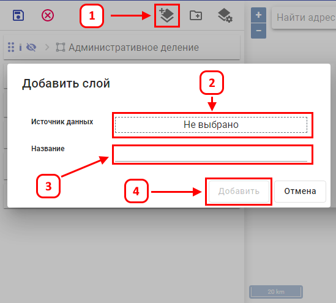
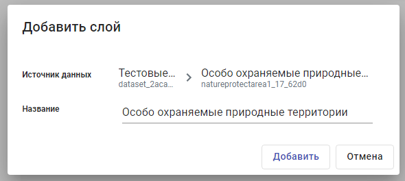

Для создания нового слоя в проекте, необходимо включить режим «настройки слоев проекта» и кликнуть по кнопке «Подключить слой» (1). В появившемся окне добавления слоя необходимо сделать выбор уже существующей таблицы и содержащий её набор данных в поле «Источник данных» (2). В поле «Название» (2) ввести наименование слоя и нажать «Добавить»(3).

Пример заполнения полей в окне добавления слоя представлен ниже.
